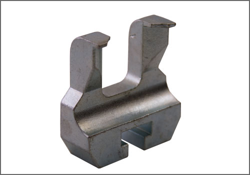
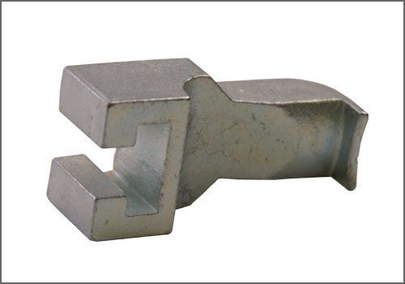

Puller Claw for VW 2.0 Turbo - Accessory Arm (25mm spread) - AST Tool # T 40001-6
Puller Claw for VW 2.0 Turbo - Accessory Arm (25mm spread)
AST tool# T 40001-6

Puller Claw - Accessory Arm (25mm spread). Used in conjunction with T 40001 Puller and T 40001-7 Arm. (Not part of the T 40001 kit; order separately.)
Applicable to:
VW/Audi; 2.0L 4V Direct Injection Engine (BPY) (BPG) (BWT); Used to remove Camshaft Gear/Wheel.
- Made in Germany
- Contact AST for pricing
- Applicable; VW/Audi 2.0L 4V Direct Injection Engine (BPY) (BPG) (BWT)
- Thin fingers on end of Claw to fit into the tight area behind the Cam Wheel
Contact AST for pricing.
Assenmacher Specialty Tools
1-800-525-2943
Additional Tools Possibly Required:

T 40001-7 - Puller Claw for VW 2.0 Turbo; Accessory Arm